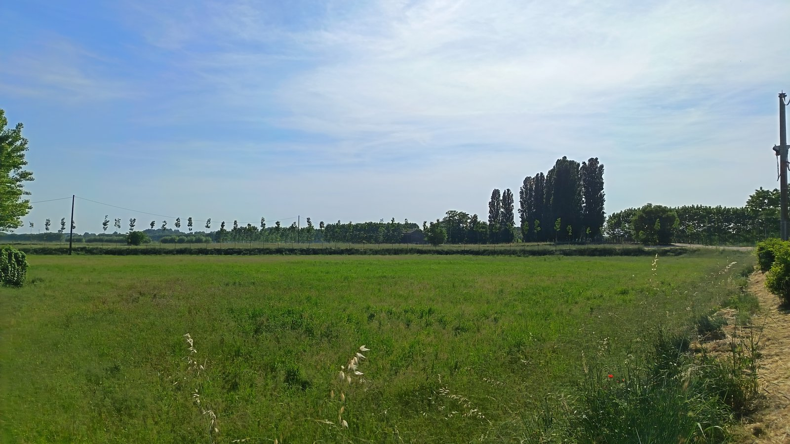
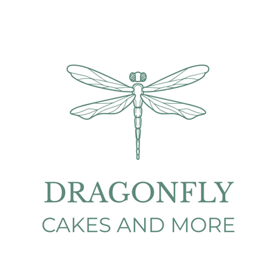

Il tempo
Ogni cosa ha il suo tempo, e i suoi tempi. In laboratorio non si può sempre avere fretta: alcune preparazioni hanno bisogno di essere lasciate fare.

Sono cresciuta in una casa con l’orto, dove quasi tutto si faceva in casa. Mia nonna cucinava con una bacinella di plastica e un mestolo di legno, e da lì uscivano cose meravigliose. Da allora mi porto dietro una convinzione: anche dagli ingredienti più semplici può nascere qualcosa di speciale.
La passione per la pasticceria è cresciuta insieme a me. Nel tempo ho approfondito tecniche e tendenze attraverso corsi, blog internazionali e riviste di cucina comprate durante i viaggi. Ho frequentato anche corsi professionali di pasticceria e panificazione, perché ciò che ami continua sempre a insegnarti qualcosa.
Dragonfly Cakes and More nasce da questa storia: una passione cominciata in casa, cresciuta con la pratica e lo studio e di cui oggi ho fatto il mio lavoro.
Ogni cosa ha il suo tempo, e i suoi tempi. In laboratorio non si può sempre avere fretta: alcune preparazioni hanno bisogno di essere lasciate fare.
In pasticceria i grammi contano. Ingredienti, distinta base e tracciabilità passano dal gestionale. Non è la parte più poetica del lavoro, ma la creatività sa manifestarsi anche in queste forme.
Non mi basta che una cosa funzioni: voglio capire perché. È da lì che nascono le prove, gli esperimenti e, ogni tanto, anche le idee migliori.
Sono cresciuta con il chisòl a merenda — il che, a pensarci, è un ottimo punto di partenza per fare questo lavoro.

Perché una libellula
La libellula è arrivata prima come nome, poi come simbolo. Solo dopo averla scelta ho cercato il suo significato e ho trovato parole che mi sembravano familiari: trasformazione, leggerezza, adattamento.
Cambia forma senza perdere se stessa, si muove con precisione e sa correggere la rotta in volo. È leggera, ma non fragile. Mi piace pensare che anche Dragonfly Cakes and More abbia questi tratti: attenzione, curiosità e la libertà di provare strade diverse, senza prendersi troppo sul serio.
Scorri il catalogo, guarda le foto, fatti un'idea.